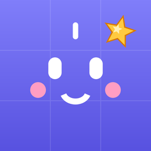

LogiPuz
Endless logic puzzles, each solvable by logic alone.
Before a puzzle reaches you, the app checks that it has exactly one solution and can be solved without guessing. When you're stuck, a hint first shows the next technique to use and where to look. Tap "Show the reasoning" to see why it works, drawn right on the grid.
- No ads
- No subscription
- No account
- No data collection
- iPhone & iPad
Puzzles
Star Battle
Place the given number of stars in every row, column and colored region. Stars never touch, not even diagonally.
Number Place
Fill in 1 to 9 once each in every row, column and bold 3×3 box.
Rectangles
Split the grid into rectangles. Each contains one number, which equals its size.
Two Colors
Fill the grid with two colors: never three in a row, and every line is half and half.
Cross Sums
Fill white cells with 1 to 9 so each run adds up to its clue, with no repeats in a run.
Number Loop
Connect the dots into a single loop. Each number tells how many of its sides are lines.
Nonogram
The clues give the runs of filled cells in each row and column. Fill them all in and a picture appears.
Bridges
Connect the islands with straight bridges, as many as each number says. No crossings, at most two between a pair, and everything linked.
Calc Blocks
Fill every row and column with each number once, and make each outlined block's math (+ − × ÷) work.
New to a puzzle? Tap "Learn to Play" at the top of its screen to learn the rules and controls by solving a small puzzle together.
FAQ
What can I play for free?
- Lv1 and Lv2 of every puzzle (3 puzzles per puzzle type per day; resets at midnight)
- The Daily Puzzle, tutorials, the technique guide, and replaying your favorites
Full Unlock (a one-time purchase) removes the daily limit and unlocks Lv3–Lv5, technique practice, Lv5 leaderboards and puzzle types added in the future. It is not a subscription.
I bought Full Unlock but it isn't active / I switched devices
Tap "Restore Purchases" in the Settings tab or on the purchase screen. On a device signed in with the Apple Account you used, it comes back at no extra charge. Family Sharing is not supported.
Can I move my records to a new device?
Restoring your iPhone from a backup (iCloud or computer) brings your records along.
Without a backup, use Settings → "Export Records" on the old device and Settings → "Import Records" on the new one. Duplicate records are skipped.
How many puzzles are there?
There's no fixed number. A new puzzle is made each time you play, so you can play as many as you like. The Daily Puzzle is the same for everyone on a given day.
How are hints and mistakes counted?
- Each hint you open counts once. Opening it again without changing the grid doesn't add to the count.
- "Show the reasoning" is free. "Show the answer" counts as one more hint.
- With "Show Mistakes" on, anything that differs from the solution (a star, number, rectangle or line) turns red and counts as one mistake. × marks and pencil notes are just for you and aren't counted.
- Two Colors has only two colors, so showing wrong cells would give the answer away. There, only placements that break a rule count as mistakes.
- While you keep tapping the same cell or side to cycle through its states, nothing is counted until you settle on one.
- Clearing a puzzle with no hints and no mistakes is a "Perfect".
I think this puzzle can't be solved by logic
Every puzzle is checked to have one solution that can be reached without guessing. Tap "Hint" to see the next technique and where to look, then "Show the reasoning" or "Show the answer" to see which cells it decides and why. If there's a mistake on the grid, the hint tells you that first.
How do the leaderboards work?
For each puzzle type, you compete on your average time over your last five Lv5 clears with no hints or mistakes (Star Battle 1-star and 2-star, and Two Colors with and without = ≠ marks, are separate). Using an average keeps one lucky puzzle from deciding the ranking. "Solve Again" and shared puzzles don't count.
Leaderboards and achievements use Apple's Game Center. To take part, sign in under Settings → Game Center on your iPhone. Once 50 or more players have joined, the results screen also shows your "Top %".
How do I send a puzzle to a friend?
Open a solved puzzle in the Records tab and tap "Share This Puzzle". You can send an image of the puzzle and a link that opens it in the app. Your friend needs the app to open the link.
Is any personal data or play data sent anywhere?
Nothing is sent to the developer. There are no ads, analytics or tracking, and your records and settings are stored only on your device. Only if you sign in to Game Center are your achievements and leaderboard times sent to Apple's Game Center. See the Privacy Policy for details.
Contact
Please email us with bug reports or feedback.
It helps to include your device (e.g. iPhone 15), iOS version and app version (at the bottom of the Settings tab).